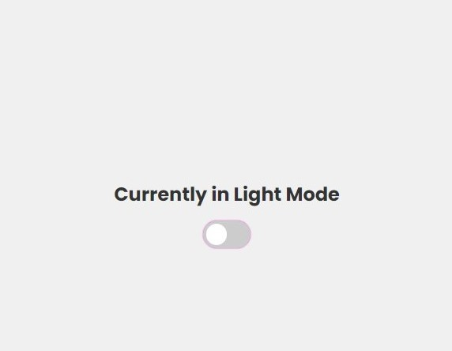

Projects
Scroll down to see the effect!
Basic image slider using fundamental DOM manipulation concepts. Reinforced skills in element selection, function definition, and event handling. Despite their simplicity, these projects integrated a wide range of our learning.

Dark/Light Mode toggle feature, starting basically from scratch and adding all of the HTML, CSS, and JavaScript to accomplish this functionality.

Basic web page which utilized the Intersection Observer API to give the elements a fade-and-slide-in effect as the page is scrolled.